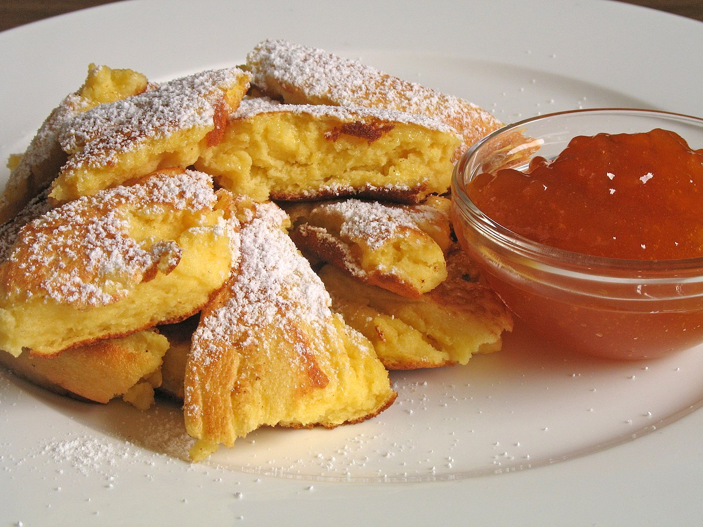

Kaiserschmarren

Description
Kaiserschmarrn or Kaiserschmarren (Emperor's Mess) is a lightly sweetened pancake that takes its name from the Austrian emperor (Kaiser) Franz Joseph I, who was fond of this fluffy shredded pancake. It is served as a dessert or as a light lunch alongside apple sauce and contains raisins or dried cranberries.
Preparation:45 minutes
Servings:4 servings
Ingredients
- 6 eggs
- 1 1/2 cups milk
- 1 1/3 cup all-purpose wheat flour
- 3 tbsp granulated sugar, for the topping
- 2 tbsp raisins
- 1 packet (8 g) vanilla sugar
- A dash of dark rum
- Some grated lemon rind
- A pinch of salt
- 1.7 oz butter for frying
- 1 tbsp of butter shavings and crystal sugar, for caramelising
- Icing sugar and cinnamon for dusting
Steps
- Place the raisins in a bowl, mix with the rum, and leave to stand for approx. 15 minutes. Separate the eggs and place the yolks in a mixing bowl. Add the milk and flour and flavour with some grated lemon rind and vanilla sugar. Mix to form a smooth dough.
- Beat the egg whites with the crystal sugar and a small pinch of salt until it forms a firm peak, and fold into the dough mix. Pre-heat the oven to 180°C / 356°F.
- Let the butter melt and bubble up in one large, or two small (coated) heatproof frying pan(s). Pour in the mixture and after 1–2 minutes, scatter the soaked raisins over the top. Cook the underside until light brown, turn over using a spatula and bake for 6–8 minutes in the pre-heated oven until golden brown. You can also cook it on the stovetop instead.
- Tear the ‘Schmarren’ into small pieces, using two forks. Scatter the butter shavings over the top, sprinkle with some granulated sugar, and caramelise under the grill at a high heat.
- Remove from the grill and arrange on pre-heated plates. Dust with icing sugar and cinnamon. Serve with a plum or berry ragout, or fruit compote. The Kaiserschmarren can also be cooked at the top of the oven and caramelised at the end with a lid to cover. Cooking time: 8–10 minutes